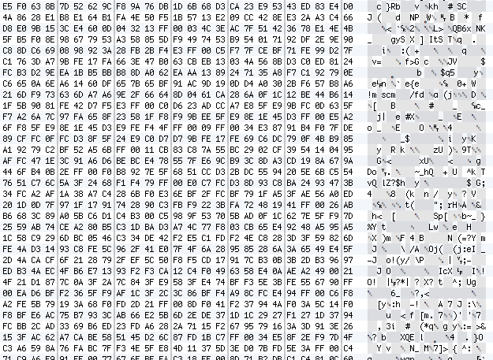
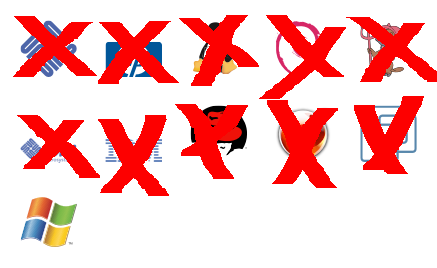

木構造を表現出来るプレゼンテーション作成ツールSerzone.jsの開発
Developed
Presentation Framework
Serzone.js
which has
Tree Structure
Tweet free!
情報科学類 201111411 吉村 優
http://yoshimurayuu.github.com/Serzone/
Traditional Presentation
These are PowerPoint, KeyNote and so on...
 |
 |
Differences
It is Difficult to Get Differences because Binary Data
→ Text Data is Better
Multi-platform
Not Exist Compatibility among OS
→ Write Once, Run Anywhere
Presentation should Solve these Problem
Morden(?) Framework
Beamer
Based on LaTeX, Generate PDF

http://ja.wikipedia.org/wiki/Beamer
impress.js
Based on HTML & CSS3

http://bartaz.github.com/impress.js/
Prezi
Based on Flash

http://prezi.com/9ppmmk2bbe8p/specialseminar2011/
These are can't express Tree Structure between Slides
Tree Structure
Animations
should be Based on
Tree Structure
of
Presentation
Then
Serzone.js
is a
Presentation Framework
based on
HTML, CSS
and
JavaScript
Reasons
Why Select HTML and CSS?
Multi-platform
It Works on Any OS If Chrome Works
CSS Has Powerful Animation
Write Animation based on Text

HTML has Tree Structure
HTML Can Empress Tree Structure

Easy to Paste Sorce Code
for Instance, Use highlight.js
\NeedsTeXFormat{pLaTeX2e}
\ProvidesClass{word}
[2012/11/03 v1.0
Standard WORD class]
\newcounter{@paper}
\newif\if@landscape \@landscapefalse
\newcommand{\@ptsize}{}
\newif\if@restonecol
\newif\if@titlepage
\@titlepagetrue
\newif\if@openrightExamples 1
About Slide
One Slide
<section>
<h1>Head</h1>
<p>Text</p>
<!-- Comment -->
</section>This is Table of Child Section
Head
Expand Child Section
Inject Nodes of Section into the Table
Nested Slide
<section>
<h1>Head 1</h1>
<p>Text 1</p>
<section>
<p>Text 2-1</p>
<h1>Head 2-1</h1>
</section>
<section>
<p>Text 2-2</p>
<h1>Head 2-2</h1>
</section>
</section>Head 1
Text 1
Head 2-1
Text 2-1
Head 2-2
Text 2-2
Same Works in Any Point of Tree Structure
Examples 2
About Steps
Define Step
Step Object which has This Structure
- type
- inherit or Not
- init
- Initialize Function
- fire
- Firing Function
JS Code
appear : {
type : "inherit",
init : function (o) {
o.obj.style.webkitTransition = "color 0s ease-in-out 0ms"
o.obj.style.color = "white";
o.obj.style.webkitTransition = "color 1s ease-in-out 0ms"
},
fire : function (o) {
o.obj.style.color = "black";
}
},Use Step
One Step
<div class="step" action="appear">
<p>Appear This Node If keyEvent Occur</p>
</div>Appear This Node If keyEvent Occur
→ Any Works You Can If Implement
(e.g., the Animation of moving Slides is Implemented with Same Way)
Nested Steps
<div class="step" action="appear">
<p>Step 1</p>
<div class="step" action="appear">
<p>Step 1-1</p>
</div>
<p>Step 2</p>
</div>Step 1
Step 1-1
Step 2
Other Things
Test-Driven Development
Use JsTestDriver
http://code.google.com/p/js-test-driver/
Test Case
SlideTest.prototype["test depth property"] = function () {
var slide0 = Serzone.slides[0];
var slide1 = Serzone.slides[1];
assertEquals(0, slide0.depth);
assertEquals(0, slide1.depth);
slide1.children.forEach( function (c) {
assertEquals(1, c.depth);
});
};Independ jQuery
It is Easiness for JavaScript Fundamentalist
Distribute on GitHub
https://github.com/yoshimuraYuu/Serzone

Future Works
You Can (not) redo
Back Function is NOT yet Implemented
Random Access
One Way Only

Fin
Thank you for your attention